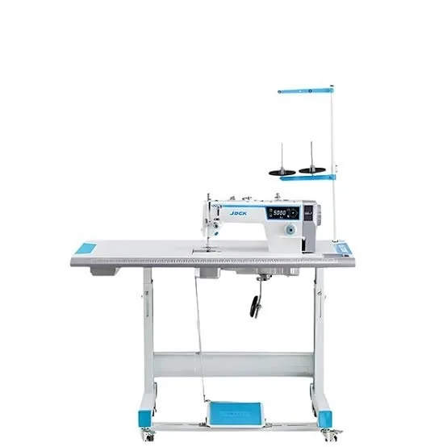
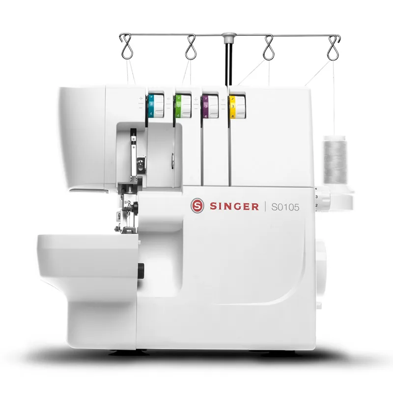
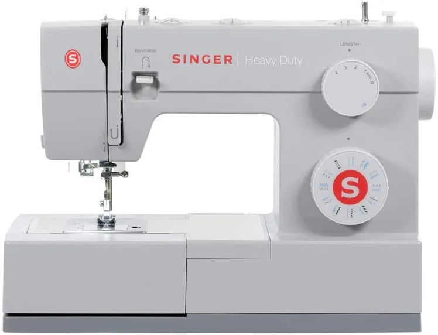

01
Referencia de catálogo
Jack A2C-C
Máquina plana industrial; la ficha publica 110 V y corte de hilo.

Imagen publicada por Taller CastilloMáquinas, accesorios y servicio técnico. Consulta el modelo correcto y organiza lo que hace falta para revisarlo.
Guarda tus referencias en una lista local y prepara el siguiente paso. Precios, variantes y existencias se revisan en cada ficha oficial.
Máquina plana industrial; la ficha publica 110 V y corte de hilo.

Máquina overlock Singer S0105 del catálogo oficial.

Máquina de coser Singer 4423 Heavy Duty del catálogo oficial.
Empresa de máquinas de coser con tienda online de equipos, accesorios y repuestos, y servicios de mantenimiento y reparación.
Prueba cantidades y condiciones. Obtén un resumen local para revisar antes de hablar con la empresa.
Datos revisados el 3 de noviembre de 2026. La empresa confirma cualquier condición vigente.
Máquina plana industrial; la ficha publica 110 V y corte de hilo.
Máquina overlock Singer S0105 del catálogo oficial.
Máquina de coser Singer 4423 Heavy Duty del catálogo oficial.
La empresa publica servicios de reparación y mantenimiento de máquinas de coser.
La tienda tiene agujas, bobinas y otros accesorios o repuestos.
Su sitio corporativo publica establecimiento en Alajuela.
La consulta oficial admite preguntas sobre máquinas y repuestos; se requiere validar el modelo exacto.
Las fichas de la tienda incluyen opciones de compra; verificar condiciones en el sitio oficial.